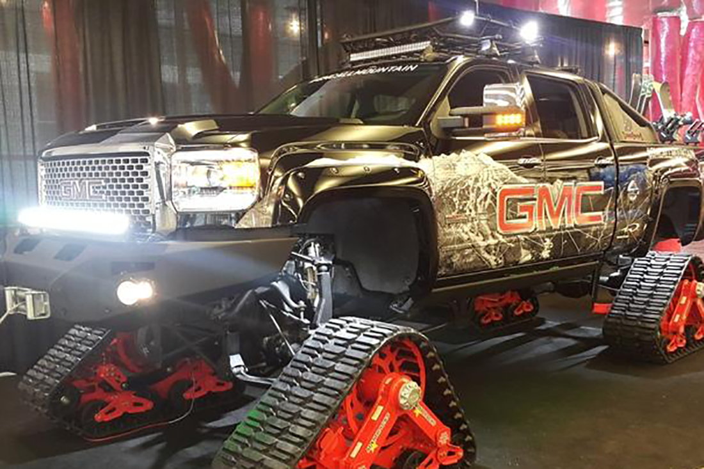
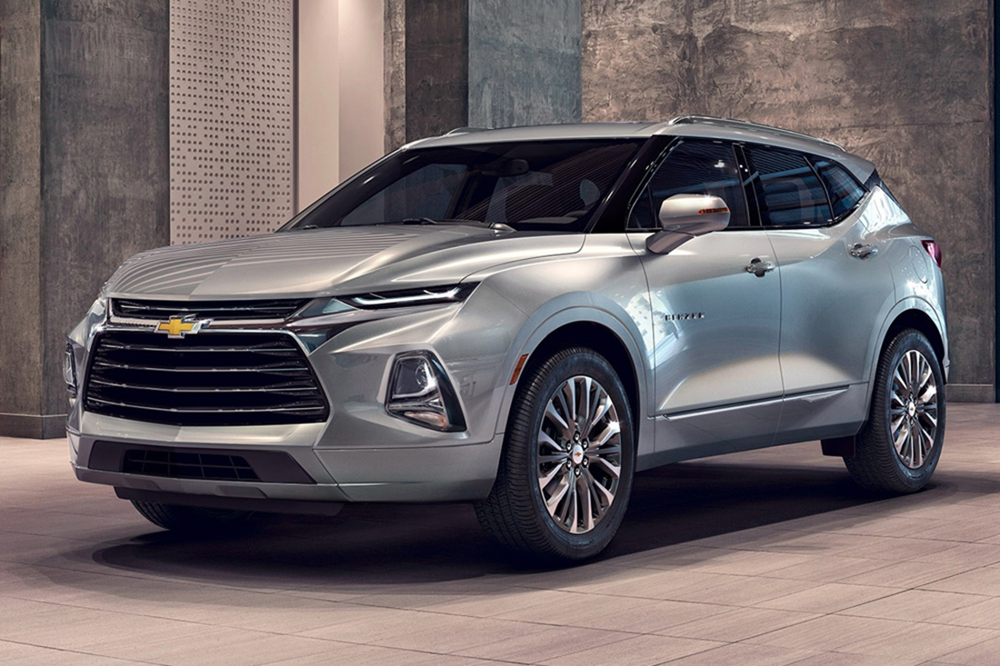
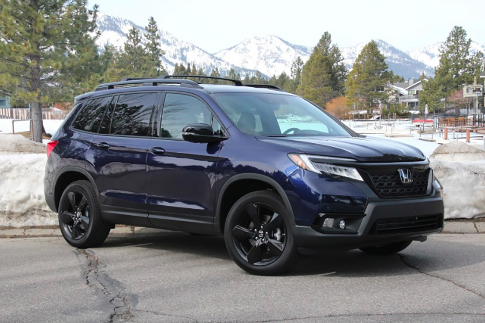
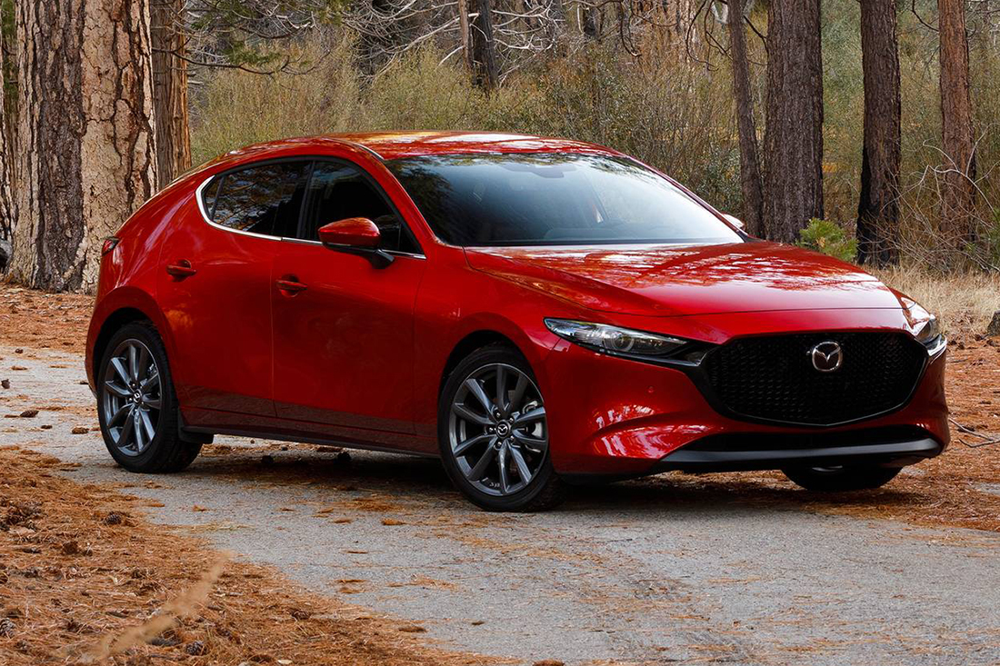
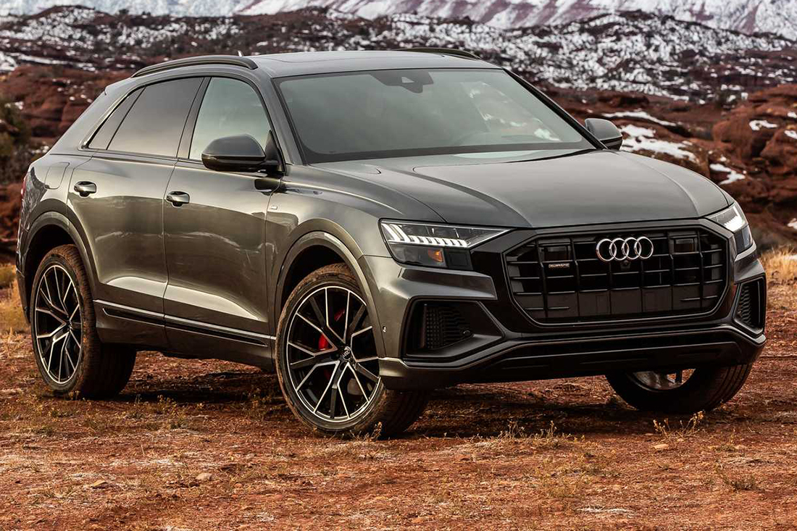
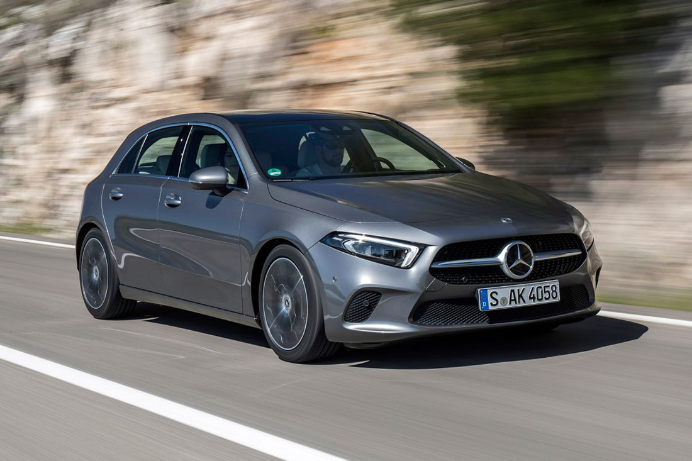
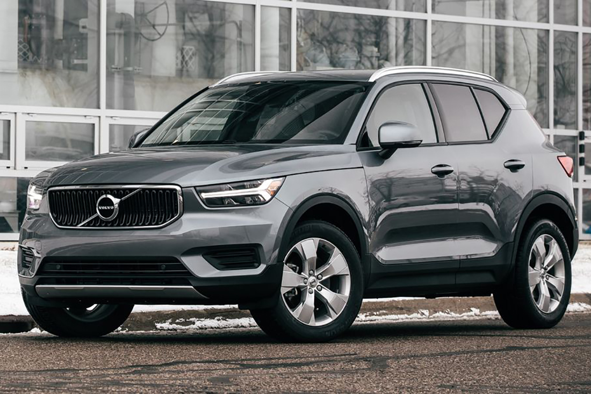
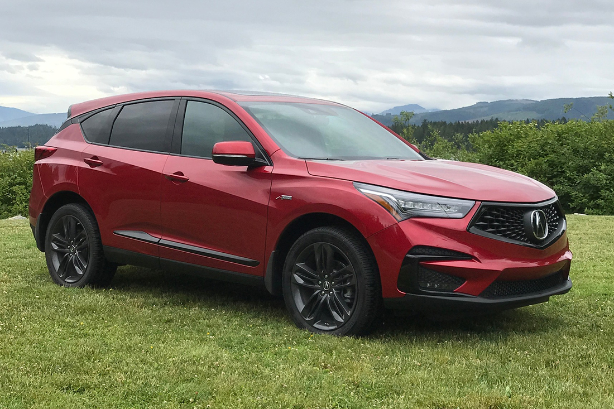

Налетай, подешевело — 2: «проходные» авто из США
Кредит, рассрочка, лизинг... Как бы дилеры ни заманивали клиентов, всегда найдется тот, кто предпочтет «слегка
б/у»,
но зато с более мощным мотором, лучшим оснащением и на пару классов выше. И судя по тому, как напряженно
работают
пункты таможенного оформления, таких среди белорусов довольно много. Вопрос только в том, что и откуда выбрать.
Европейский рынок имеет преимущества в виде быстрого срока доставки и прозрачной истории, но радость покупки
омрачают большие пробеги и не самые роскошные комплектации. А вот за океаном все наоборот: пробег может быть
минимальным, но выгоднее покупать поврежденную машину и ждать ее два-три месяца. Тем не менее довольно большое
количество наших соотечественников именно так и поступает. Посмотрим, какие модели из США стали доступнее в 2022
году, перейдя в категорию «проходных».

Как мы уже писали ранее, в Беларусь выгоднее всего импортировать автомобили в возрасте от трех до пяти лет.
Однако
поскольку заокеанский рынок сформирован таким образом, что цена машин с повреждениями определяется в ходе торгов
на
аукционе, мы вынуждены будем отказаться от указания примерной стоимости.
Chevrolet Blazer

Большинство автомобилистов запомнило Blazer как рамный внедорожник, однако времена его не пощадили — теперь это
обычный паркетник. Причем даже переднеприводный в базовой версии. Однако, вопреки тенденциям, «даунсайзинг» его
не
коснулся, и вместо турбированного малолитражного мотора Blazer 2019 модельного года даже в базовой версии
оснащается
2,5-литровым «атмосферником» мощностью 193 л. с. Кстати, растаможка этой версии будет стоить около 7,5 тыс.
евро.
Поэтому выгоднее искать 2-литровую турбированную версию — у нее и мощность повыше, и на таможне придется
оставить
всего-то около 5 тыс. евро.
Honda Passport

Еще один кроссовер, на растаможке которого не удастся сэкономить, — почти неизвестный в наших краях Honda
Passport.
Давным-давно японцы выпускали под этим названием лицензионные копии внедорожника Isuzu, однако рама и зависимая
подвеска ушли в прошлое. В третьем поколении Passport имеет несущий кузов, 7-местный салон и 9-диапазонный
«автомат». Привод может быть как передним, так и полным, но двигатель предлагается только один — 3,5-литровый
V6,
растаможка которого обойдется примерно в 12,5 тыс. евро.
Mazda 3

Одна из немногих компаний, которая не использует малолитражные турбомоторы, — это Mazda. Но если на европейском
рынке «трешку» можно купить с 1,5-литровым двигателем, что дает шанс сэкономить на таможенных платежах, то в США
данная модель предлагается в основном с самым мощным агрегатом в гамме — 2,5-литровым на 227—250 л. с. Поэтому и
растаможивать ее придется примерно за 7,5 тыс. евро.
Audi Q8

Маркетологи Audi долго наблюдали за успехами BMW X6 и Mercedes-Benz GLE Coupe, поэтому их «ответочка» оказалась
весьма мощной, в прямом и переносном смыслах. Купеобразный кроссовер Q8 можно назвать самым стильным в сегменте
— и
это не будет преувеличением. Естественно, он выпускается только в полноприводных версиях, а диапазон мощности
составляет от 230 до 600 л. с. На американском рынке по традиции представлены только самые мощные модификации,
поэтому стоимость растаможки будет варьироваться от 12 до 15 тыс. евро.
Mercedes-Benz A-Class

Хетчбэк Mercedes-Benz A-класса четвертого поколения звезд с неба не хватал — у нас он продавался в весьма
ограниченных количествах. Видимо, слишком мало «Мерса» за довольно большие деньги. Однако если речь заходит о
«бэушке», то почему бы и нет? На американском рынке распространены версии с 2-литровым бензиновым мотором,
поэтому
размер таможенной пошлины превысит 5 тыс. евро.
Volvo XC40

Даже несмотря на то, что владельцем Volvo является китайская компания Geely, которая уже вовсю использует
наработки шведских инженеров в своих моделях, на имидж именитого бренда это никак не влияет. Тем более что тот
же XC40
создан
на совершенно новой платформе и даже на фоне своих именитых конкурентов выглядит очень прогрессивно. И стильно.
На
американском рынке этот компактный, но довольно дорогой кроссовер представлен с 2-литровым бензиновым
турбомотором,
поэтому растаможка будет стоить более 5 тыс. евро.
Acura RDX

Позиции компании Honda на белорусском рынке можно охарактеризовать одним словом — «никакие», что, однако, не
мешает
подержанным автомобилям этой марки быть весьма популярными. Та же история и с премиальным подразделением Acura.
И
пусть по статусу эти модели пока не могут сравниться с теми же Lexus, однако в Беларуси у них довольно много
поклонников. Кроссовер RDX, третье поколение которого начали выпускать в 2019 году, оснащается 2-литровым
276-сильным турбомотором и 10-диапазонной автоматической коробкой передач. Привод — передний или полный. Размер
таможенных платежей в этом случае составит более 5 тыс. евро.